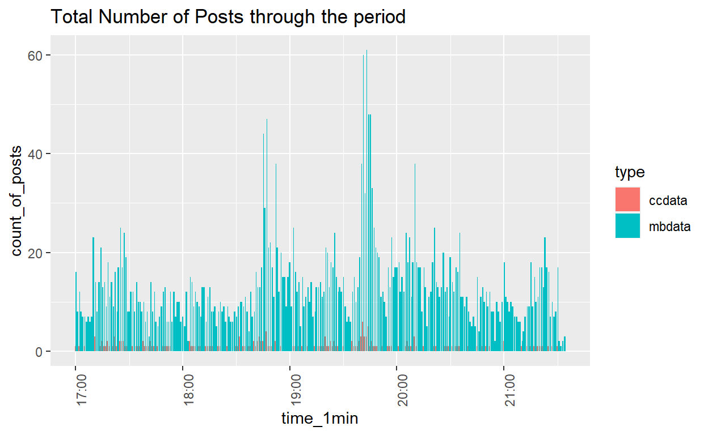

A short description of the post.
packages= c('raster','sf','clock','tmap',
'tidyverse','data.table','lubridate',
'textclean','tm','wordcloud','wordcloud2','text2vec',
'topicmodels','tidytext','textmineR','quanteda',
'BTM','textplot','concaveman')
for(p in packages){
if(!require(p,character.only= T)){
install.packages(p)
}
library(p, character.only = T)
}
#read csv file
data_17_1830=read_csv("data/MC3/csv-1700-1830.csv")
data_1830_20=read_csv("data/MC3/csv-1831-2000.csv")
data_20_2130=read_csv("data/MC3/csv-2001-2131.csv")
#append data
data=rbindlist(list(data_17_1830,data_1830_20,data_20_2130))
#print head of data
head(data)
type date(yyyyMMddHHmmss) author
1: mbdata 2.014012e+13 POK
2: mbdata 2.014012e+13 maha_Homeland
3: mbdata 2.014012e+13 Viktor-E
4: mbdata 2.014012e+13 KronosStar
5: mbdata 2.014012e+13 AbilaPost
6: mbdata 2.014012e+13 ourcountryourrights
message
1: Follow us @POK-Kronos
2: Don't miss a moment! Follow our live coverage of the POK Rally in the Park!
3: Come join us in the Park! Music tonight at Abila City Park!
4: POK rally to start in Abila City Park. POK leader Sylvia Marek to open with a speech.<U+0098> #KronosStar
5: POK rally set to take place in Abila City Park - POK leader Sylvia Marek has begun with opening remarks #AbilaPost
6: POK rally in the park tonight! #POKrally
latitude longitude location
1: NA NA <NA>
2: NA NA <NA>
3: NA NA <NA>
4: NA NA <NA>
5: NA NA <NA>
6: NA NA <NA>#timestamp in lubridate
data$timestamp <- ymd_hms(data$`date(yyyyMMddHHmmss)`)
•1. Number of post throughout the time period
data$time_1min = cut(data$timestamp, breaks="1 min")
count <- data %>%
group_by(type,time_1min) %>%
summarise(count_of_posts= n_distinct(message))
count$time_1min=ymd_hms(count$time_1min)
#count$time_1min=format(count$time_1min,format = "%H:%M:%S")
ggplot(count,aes(x=time_1min,y=count_of_posts,fill=type))+
geom_bar(stat="identity",position="dodge")+
theme(axis.text.x = element_text(angle = 90, hjust = 1))+
ggtitle("Total Number of Posts through the period")

# A tibble: 10 x 3
# Groups: type [1]
type time_1min count_of_posts
<chr> <dttm> <int>
1 mbdata 2014-01-23 19:43:00 61
2 mbdata 2014-01-23 19:41:00 60
3 mbdata 2014-01-23 19:44:00 48
4 mbdata 2014-01-23 19:45:00 48
5 mbdata 2014-01-23 18:47:00 47
6 mbdata 2014-01-23 18:45:00 44
7 mbdata 2014-01-23 18:52:00 38
8 mbdata 2014-01-23 19:40:00 38
9 mbdata 2014-01-23 20:10:00 38
10 mbdata 2014-01-23 19:46:00 33With time interval at 1 minute, the number of posts trend is plotted as above. The peaks is observed during time 19:40-19:50. And the posts are also active around time 18:45:00 and 20:10:00.
data$cleaned<-
tolower(data$message)%>% # transform all message to lower cases
replace_contraction()%>% #replace contractions with long form
replace_word_elongation()%>% #remove the same letter (case insensitive) appears 3 times consecutively
str_replace_all("[0-9]", "") %>% #removing numbers
str_replace_all("(^[@#])|[[:punct:]]","")%>% #remove punctuations
# leave # and @
removeWords(stopwords("english"))%>%
str_squish()%>% #trim whitespace from a string
str_trim #removes whitespace from start and end of string
head(subset(data,select=c("message","cleaned")))
message
1: Follow us @POK-Kronos
2: Don't miss a moment! Follow our live coverage of the POK Rally in the Park!
3: Come join us in the Park! Music tonight at Abila City Park!
4: POK rally to start in Abila City Park. POK leader Sylvia Marek to open with a speech.<U+0098> #KronosStar
5: POK rally set to take place in Abila City Park - POK leader Sylvia Marek has begun with opening remarks #AbilaPost
6: POK rally in the park tonight! #POKrally
cleaned
1: follow us pokkronos
2: miss moment follow live coverage pok rally park
3: come join us park music tonight abila city park
4: pok rally start abila city park pok leader sylvia marek open speech<U+0098> kronosstar
5: pok rally set take place abila city park pok leader sylvia marek begun opening remarks abilapost
6: pok rally park tonight pokrally#convert dataframe to corpus
docs <- Corpus(VectorSource(as.character(data$cleaned)))
inspect(docs[1:2])
<<SimpleCorpus>>
Metadata: corpus specific: 1, document level (indexed): 0
Content: documents: 2
[1] follow us pokkronos
[2] miss moment follow live coverage pok rally park# Create a document-term-matrix
dtm <- TermDocumentMatrix(docs)
matrix <- as.matrix(dtm)
words <- sort(rowSums(matrix),decreasing=TRUE)
# words and frequency dataframe
df <- data.frame(word = names(words),freq=words)
#word cloud
wordcloud(words = df$word, freq = df$freq, min.freq = 5, max.words=200, random.order=FALSE, rot.per=0.35, colors=brewer.pal(8, "Dark2"))
wordcloud2(data=df, size=1.6, color='random-dark')
#4.1 Using visual analytics, characterize the different types of content in the dataset. What distinguishes meaningful event reports from typical chatter from junk or spam? Please limit your answer to 8 images and 500 words.
To distinguish meaningful events related to the kidnap events happened in , firstly, I will perform topic modeling to identify the topic in the microblogs and apply LDAvis visualization for analysis.
wordcorpus <- Corpus(VectorSource(as.character(data$cleaned)))
dtm <- DocumentTermMatrix(wordcorpus,
control = list(
wordLengths=c(2, Inf), # limit word length
bounds = list(global = c(5,Inf)), # minimum word frequency
removeNumbers = TRUE, #remove Numbers
weighting = weightTf, #weighted term frequency
encoding = "UTF-8"))
rowTotals <- apply(dtm , 1, sum) #Find the sum of words in each Document
dtm.new <- dtm[rowTotals> 0, ] #remove 0 dtm rows of matrix
topic=LDA(dtm.new,k=10,method="Gibbs",conrol=list(seed=2021,alpha=0.5,iter=200))
terms(topic,5)
Topic 1 Topic 2 Topic 3 Topic 4
[1,] "abilapost" "pokrally" "going" "pokrally"
[2,] "rt" "hi" "get" "people"
[3,] "police" "success" "just" "us"
[4,] "apd" "time" "go" "dr"
[5,] "standoff" "stop" "things" "newman"
Topic 5 Topic 6 Topic 7
[1,] "rt" "kronosstar" "pokrally"
[2,] "homelandilluminations" "pokrally" "hi"
[3,] "still" "want" "life"
[4,] "building" "dancingdolphinfire" "never"
[5,] "police" "something" "find"
Topic 8 Topic 9 Topic 10
[1,] "abila" "pok" "can"
[2,] "fire" "rally" "van"
[3,] "centralbulletin" "grammar" "one"
[4,] "dancing" "viktore" "tag"
[5,] "rt" "park" "make" #Tokenize data
tidytxtdata<- tidy(dtm)
tidytxtdata <- tidytxtdata%>% #Remove the count column
select(-count)
tidytxtdata <- tidytxtdata%>% #Change the column name 'term' to 'word' so that we can get rid of stopwords later
rename(word = term)
#Remove stopwords
tidytxtdata <- tidytxtdata%>%
anti_join(stop_words)
#Use the btm model
set.seed(321)
model <- BTM(tidytxtdata, k = 20, beta = 0.01, background = TRUE, iter = 500, trace = 100) #Run the model
2021-07-10 10:14:01 Start Gibbs sampling iteration 1/500
2021-07-10 10:14:05 Start Gibbs sampling iteration 101/500
2021-07-10 10:14:08 Start Gibbs sampling iteration 201/500
2021-07-10 10:14:12 Start Gibbs sampling iteration 301/500
2021-07-10 10:14:15 Start Gibbs sampling iteration 401/500topicterms <- terms(model, top_n = 10) #View the topics
topicterms
[[1]]
token probability
1 pokrally 0.07554282
2 police 0.04538601
3 rt 0.04538601
4 kronosstar 0.03030760
5 newman 0.03030760
6 pok 0.03030760
7 abila 0.01522919
8 abilaallfaith 0.01522919
9 arrested 0.01522919
10 arrived 0.01522919
[[2]]
token probability
1 pokrally 0.07415090
2 viktore 0.07039658
3 stop 0.03754630
4 overcome 0.03473057
5 pok 0.02816051
6 time 0.02753479
7 playing 0.02628335
8 song 0.02471905
9 start 0.02346761
10 charging 0.02252903
[[3]]
token probability
1 dr 0.06467592
2 rt 0.06418873
3 newman 0.06223996
4 abilapost 0.04238690
5 stefano 0.04226510
6 di 0.04165611
7 jakab 0.04165611
8 lucio 0.04104712
9 lorenzo 0.03568801
10 audrey 0.03252127
[[4]]
token probability
1 pokrally 0.08940874
2 abila 0.05916866
3 failure 0.05588170
4 success 0.05588170
5 develop 0.03944687
6 discouragement 0.03944687
7 failures 0.03944687
8 stepping 0.03944687
9 stones 0.03944687
10 surest 0.03944687
[[5]]
token probability
1 pokrally 0.16568005
2 kronosstar 0.09334578
3 time 0.04600938
4 living 0.04308410
5 successful 0.02978736
6 dont 0.02952142
7 life 0.02925549
8 waste 0.02393679
9 youre 0.01994777
10 energy 0.01941590
[[6]]
token probability
1 pokrally 0.17854123
2 kronosstar 0.10111504
3 life 0.07615528
4 real 0.03311243
5 child 0.02674515
6 dreams 0.02368885
7 courage 0.02241539
8 achieve 0.01961379
9 afraid 0.01961379
10 light 0.01859502
[[7]]
token probability
1 reports 0.05356979
2 van 0.05356979
3 abilapost 0.04967814
4 black 0.04532864
5 fire 0.04372619
6 rt 0.04349727
7 cars 0.03914777
8 abila 0.03800317
9 witness 0.03777425
10 gelatogalore 0.03296691
[[8]]
token probability
1 pokrally 0.17356836
2 kronosstar 0.11953377
3 success 0.06358888
4 life 0.04121092
5 measured 0.02674712
6 traffic 0.02538261
7 person 0.02319939
8 fall 0.02183488
9 dont 0.02074328
10 stop 0.02019747
[[9]]
token probability
1 pok 0.08658914
2 rt 0.08259600
3 rally 0.07261315
4 abila 0.06536245
5 police 0.04960006
6 park 0.04382051
7 city 0.03404783
8 centralbulletin 0.02963435
9 abilapost 0.02805811
10 presence 0.02564121
[[10]]
token probability
1 pokrally 0.14804129
2 kronosstar 0.07852481
3 people 0.04862912
4 public 0.03170024
5 successful 0.02917891
6 world 0.02737797
7 person 0.02305570
8 unsuccessful 0.02161494
9 gold 0.02089457
10 arent 0.02053438
[[11]]
token probability
1 rt 0.08157892
2 police 0.06609151
3 kronosstar 0.04348154
4 ithakis 0.03544796
5 apd 0.03428847
6 abila 0.03387437
7 alexandrias 0.03081002
8 shots 0.02666900
9 fired 0.02559233
10 gelato 0.02327336
[[12]]
token probability
1 abila 0.09594659
2 rt 0.08909841
3 fire 0.08232156
4 dancing 0.07197795
5 dolphin 0.06470176
6 intnews 0.02746477
7 apartment 0.02204330
8 internationalnews 0.02168662
9 department 0.02061659
10 centralbulletin 0.01940389
[[13]]
token probability
1 pokrally 0.17895981
2 kronosstar 0.12295508
3 dream 0.02854096
4 life 0.02682434
5 fail 0.02038701
6 remember 0.01824124
7 wind 0.01824124
8 wrong 0.01673919
9 live 0.01631004
10 product 0.01631004
[[14]]
token probability
1 pok 0.15301152
2 rally 0.14810615
3 grammar 0.12508867
4 tunnel 0.02018935
5 abilapost 0.01509531
6 hand 0.01490665
7 rt 0.01415198
8 carpet 0.01358597
9 hurts 0.01358597
10 closed 0.01301997
[[15]]
token probability
1 pokrally 0.12139916
2 success 0.05249068
3 succeed 0.04222771
4 purpose 0.03049860
5 desire 0.02873924
6 life 0.02610019
7 lost 0.02551373
8 failure 0.02434082
9 fail 0.02404760
10 bunch 0.02258146
[[16]]
token probability
1 pokrally 0.14951313
2 kronosstar 0.08739062
3 improve 0.02734877
4 world 0.02586258
5 abila 0.02467363
6 online 0.02378192
7 wait 0.02229574
8 starting 0.02051232
9 single 0.01902613
10 winning 0.01902613
[[17]]
token probability
1 pokrally 0.10054169
2 kronosstar 0.05088169
3 motivation 0.04448378
4 progress 0.04143715
5 people 0.03595323
6 abila 0.03442992
7 recommend 0.03442992
8 teach 0.02681335
9 bathing 0.02620403
10 daily 0.02620403
[[18]]
token probability
1 rt 0.08696957
2 van 0.03269774
3 tag 0.03119251
4 pok 0.02600783
5 apd 0.02567334
6 people 0.02425173
7 police 0.02115765
8 cops 0.01864894
9 standoff 0.01731096
10 stand 0.01647472
[[19]]
token probability
1 rt 0.09931314
2 fire 0.06155022
3 homelandilluminations 0.04623002
4 kronosstar 0.04132487
5 dancingdolphinfire 0.03245529
6 building 0.03198493
7 police 0.03023789
8 arrived 0.02707978
9 abilapost 0.02338412
10 additional 0.02183866
[[20]]
token probability
1 pokrally 0.15538204
2 kronosstar 0.06759805
3 life 0.05399154
4 destiny 0.03994610
5 day 0.03906826
6 matter 0.03467906
7 firm 0.03116770
8 control 0.02985094
9 chance 0.02853418
10 resolve 0.02853418#4.2 Use visual analytics to represent and evaluate how the level of the risk to the public evolves over the course of the evening. Consider the potential consequences of the situation and the number of people who could be affected. Please limit your answer to 10 images and 1000 words.
data_2<-data %>%
group_by(author) %>%
dplyr::summarise(all_posts=paste(cleaned, collapse=" "))
sotu_firsts_nouns <- PrepText(data_2, groupvar = "author", textvar = "all_posts", node_type = "groups", tokenizer = "words", pos = "nouns", remove_stop_words = FALSE, compound_nouns = TRUE)
# <- PrepTextSent(data_2, groupvar = "author", textvar = "cleaned", node_type = "groups",
#tokenizer = "words", sentiment_lexicon = "afinn", language = "english", udmodel_lang = #udmodel_lang, remove_numbers = NULL, compound_nouns = TRUE)
sotu_firsts_network <- CreateTextnet(sotu_firsts_nouns)
#VisTextNet(sotu_firsts_network,label_degree_cut = 0)
VisTextNetD3(sotu_firsts_network)
sotu_firsts_communities <- TextCommunities(sotu_firsts_network)
top_words_modularity_classes <- InterpretText(sotu_firsts_network, sotu_firsts_nouns)
text_centrality <- TextCentrality(sotu_firsts_network)
#4.3 If you were able to send a team of first responders to any single place, where would it be? Provide your rationale. How might your response be different if you had to respond to the events in real time rather than retrospectively? Please limit your answer to 8 images and 500 words